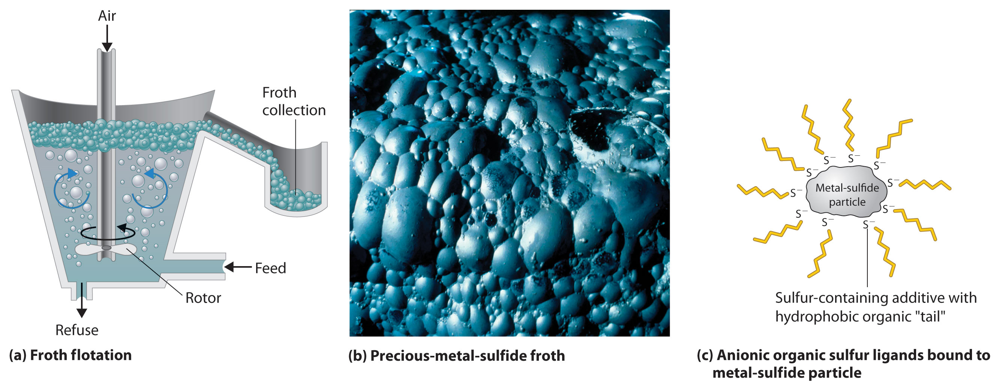
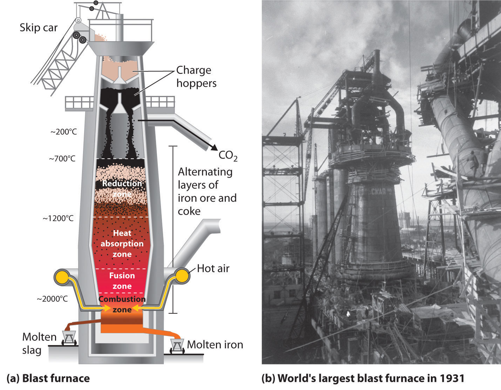

Very few of the transition metals are found in nature as free metals. Consequently, almost all metallic elements must be isolated from metal oxide or metal sulfide ores. MetallurgyA set of processes by which metals are extracted from their ores and converted to more useful forms. is the set of processes by which metals are extracted from their ores and converted to more useful forms.
Metallurgy consists of three general steps: (1) mining the ore, (2) separating and concentrating the metal or the metal-containing compound, and (3) reducing the ore to the metal. Additional processes are sometimes required to improve the mechanical properties of the metal or increase its purity. Many ores contain relatively low concentrations of the desired metal; for example, copper ores that contain even 1% Cu by mass are considered commercially useful.
After an ore has been mined, the first step in processing is usually to crush it because the rate of chemical reactions increases dramatically with increased surface area. Next, one of three general strategies is used to separate and concentrate the compound(s) of interest: settling and flotation, which are based on differences in density between the desired compound and impurities; pyrometallurgy, which uses chemical reduction at high temperatures; and hydrometallurgy, which employs chemical or electrochemical reduction of an aqueous solution of the metal. Other methods that take advantage of unusual physical or chemical properties of a particular compound may also be used. For example, crystals of magnetite (Fe3O4) are tiny but rather powerful magnets; in fact, magnetite (also known as lodestone) was used to make the first compasses in China during the first century BC. If a crushed ore that contains magnetite is passed through a powerful magnet, the Fe3O4 particles are attracted to the poles of the magnet, allowing them to be easily separated from other minerals.
Metallurgy depends on the separation of a metal compound from its ore and reduction to the metal at high temperature (pyrometallurgy) or in aqueous solution (hydrometallurgy).
Settling and flotation have been used for thousands of years to separate particles of dense metals such as gold, using the technique known as panning, in which a sample of gravel or sand is swirled in water in a shallow metal pan. Because the density of gold (19.3 g/cm3) is so much greater than that of most silicate minerals (about 2.5 g/cm3), silicate particles settle more slowly and can be poured off with the water, leaving dense gold particles on the bottom of the pan. Conversely, in flotation, the compound of interest is made to float on top of a solution. Blowing air through a suspension of the crude ore in a mixture of water and an organic liquid, such as pine tar, produces a “froth” that contains tiny particles of hydrophobic solids, such as metal sulfides, while more hydrophilic oxide minerals remain suspended in the aqueous phase (Figure 23.6 "Froth Flotation"). To make the separation more efficient, small amounts of an anionic sulfur-containing compound, such as Na+C2H5OCS2−, are added; the additive binds to the sulfur-rich surface of the metal sulfide particles and makes the metal sulfide particles even more hydrophobic. The resulting froth is highly enriched in the desired metal sulfide(s), which can be removed simply by skimming. This method works even for compounds as dense as PbS (7.5 g/cm3).
Figure 23.6 Froth Flotation
(a) When air is blown through a mixture of a finely ground metal sulfide ore and water, the more hydrophobic metal sulfides form a froth that can be easily removed, allowing them to be separated from more hydrophilic metal oxides and silicates. (b) A froth containing precious metal sulfides is formed as a by-product during the production of metallic nickel. (c) An anionic sulfur additive with hydrophobic “tails” can be used to enhance the hydrophobic character of metal sulfide particles, which causes them to be attracted to the air/water interface in the foam.
In pyrometallurgy, an ore is heated with a reductant to obtain the metal. Theoretically, it should be possible to obtain virtually any metal from its ore by using coke, an inexpensive form of crude carbon, as the reductant. An example of such a reaction is as follows:
Equation 23.4
Unfortunately, many of the early transition metals, such as Ti, react with carbon to form stable binary carbides. Consequently, more expensive reductants, such as hydrogen, aluminum, magnesium, or calcium, must be used to obtain these metals. Many metals that occur naturally as sulfides can be obtained by heating the sulfide in air, as shown for lead in the following equation:
Equation 23.5
The reaction is driven to completion by the formation of SO2, a stable gas.
Pyrometallurgy is also used in the iron and steel industries. The overall reaction for the production of iron in a blast furnace is as follows:
Equation 23.6
The actual reductant is CO, which reduces Fe2O3 to give Fe(l) and CO2(g); the CO2 is then reduced back to CO by reaction with excess carbon. As the ore, lime, and coke drop into the furnace (Figure 23.7 "A Blast Furnace for Converting Iron Oxides to Iron Metal"), any silicate minerals in the ore react with the lime to produce a low-melting mixture of calcium silicates called slag, which floats on top of the molten iron. Molten iron is then allowed to run out the bottom of the furnace, leaving the slag behind. Originally, the iron was collected in pools called pigs, which is the origin of the name pig iron.
Figure 23.7 A Blast Furnace for Converting Iron Oxides to Iron Metal
(a) The furnace is charged with alternating layers of iron ore (largely Fe2O3) and a mixture of coke (C) and limestone (CaCO3). Blasting hot air into the mixture from the bottom causes it to ignite, producing CO and raising the temperature of the lower part of the blast furnace to about 2000°C. As the CO that is formed initially rises, it reduces Fe2O3 to form CO2 and elemental iron, which absorbs heat and melts as it falls into the hottest part of the furnace. Decomposition of CaCO3 at high temperatures produces CaO (lime) and additional CO2, which reacts with excess coke to form more CO. (b) This blast furnace in Magnitogorsk, Russia, was the largest in the world when it was built in 1931.
Iron that is obtained directly from a blast furnace has an undesirably low melting point (about 1100°C instead of 1539°C) because it contains a large amount of dissolved carbon. It contains other impurities (such as Si, S, P, and Mn from contaminants in the iron ore that were also reduced during processing) that must be removed because they make iron brittle and unsuitable for most structural applications. In the Bessemer process, oxygen is blown through the molten pig iron to remove the impurities by selective oxidation because these impurities are more readily oxidized than iron (Figure 23.8 "A Basic Oxygen Furnace for Converting Crude Iron to Steel"). In the final stage of this process, small amounts of other metals are added at specific temperatures to produce steel with the desired combination of properties.
Figure 23.8 A Basic Oxygen Furnace for Converting Crude Iron to Steel

(a) A blast of oxygen is used to agitate the molten iron and oxidize impurities to products that dissolve in the less dense slag layer. The slag and the molten steel are removed by tilting the entire furnace and pouring the liquids out through the taphole. (b) A basic oxygen furnace is being filled with molten iron from a blast furnace.
The most selective methods for separating metals from their ores are based on the formation of metal complexes. For example, gold is often found as tiny flakes of the metal, usually in association with quartz or pyrite deposits. In those circumstances, gold is typically extracted by using cyanide leaching, which forms a stable gold–cyanide complex—[Au(CN)2]−:
Equation 23.7
4Au(s) + 8NaCN(aq) + O2(g) + 2H2O(l) → 4Na[Au(CN)2](aq) + 4NaOH(aq)Virtually pure gold can be obtained by adding powdered zinc to the solution:
Equation 23.8
Zn(s) + 2[Au(CN)2]−(aq) → [Zn(CN)4]2−(aq) + 2Au(s)A related method, which is used to separate Co3+, Ni2+, and Cu+ from Fe, Mn, and Ti, is based on the formation of stable, soluble ammonia complexes of ions of the late transition metals.
Suppose you are working in the chemistry laboratory of a mining company that has discovered a new source of tungsten ore containing about 5% WS2 in a granite matrix (granite is a complex aluminosilicate mineral). You have been asked to outline an economical procedure for isolating WS2 from the ore and then converting it to elemental tungsten in as few steps as possible. What would you recommend?
Given: composition of ore
Asked for: procedure to isolate metal sulfide
Strategy:
Determine which method would be most effective for separating the metal sulfide from the ore. Then determine the best method for reducing the metal to the pure element.
Solution:
You need to separate and concentrate the WS2, convert it to a suitable form so it can be reduced to the metal (if necessary), and then carry out the reduction. Because the new ore is a binary metal sulfide, you could take advantage of the hydrophilic nature of most metal sulfides to separate WS2 by froth flotation. Then, because most metal sulfides cannot be reduced directly to the metal using carbon, you will probably need to convert WS2 to an oxide for subsequent reduction. One point to consider is whether the oxide can be reduced using carbon because many transition metals react with carbon to form stable carbides. Here is one possible procedure for producing tungsten from this new ore:
Reduce the oxide with hydrogen gas at high temperature to avoid carbide formation:
Exercise
Propose an economical procedure for converting a silicate mineral deposit containing BaCO3 to the pure Ba metal.
Answer:
The conversion of metals from their ores to more useful forms is called metallurgy, which consists of three general steps: mining, separation and concentration, and reduction. Settling and flotation are separation methods based on differences in density, whereas pyrometallurgy is based on a chemical reduction at elevated temperatures, and hydrometallurgy uses chemical or electrochemical reduction of an aqueous solution. In pyrometallurgy, a reductant must be used that does not form stable compounds with the metal of interest. In hydrometallurgy, metals are separated via the formation of metal complexes.
Coke is a plentiful and inexpensive reductant that is used to isolate metals from their ores. Of Cr, Co, W, Cu, Ni, Os, Fe, Mn, La, and Hf, which cannot be isolated using this reductant? Why?
Hydrometallurgy is the preferred method for separating late transition metals from their ores. What types of ligands are most effective in this process?
Coke cannot be used as a reductant for metals that form stable carbides, such as the early transition metals (La, Hf, and W).
Tantalum and niobium are frequently found together in ores. These elements can be separated from other metals present by treatment with a solution of HF. Explain why this is an effective separation technique.
A commercially important ore of chromium is chromite (FeCr2O4), which is an analogue of magnetite (Fe3O4). Based on what you know about the oxidation states of iron in magnetite, predict the oxidation states of the metal ions in chromite.
Pure vanadium is obtained by reducing VCl4 with H2 or Mg or by reducing V2O5 with Ca. Write a balanced chemical equation for each reaction. Why is carbon not used for the reduction?
Manganese is an important additive in steel because of its reactivity with oxygen and sulfur, both of which contribute to brittleness. Predict the products of reacting Mn with these species.
The diagram of a blast furnace in Figure 23.7 "A Blast Furnace for Converting Iron Oxides to Iron Metal" illustrates several important features of the reduction of Fe2O3 to iron. Write a balanced chemical equation for each step of the process described in the figure and give the overall equation for the conversion. Oxygen is blown through the final product to remove impurities. Why does this step not simply reverse the process and produce iron oxides?
Metallic Zr is produced by the Kroll method, which uses Na as the reductant. Write a balanced chemical equation for each reaction involved in this process. The product is frequently contaminated with Hf. Propose a feasible method for separating the two elements.
The compound Cr2O3 is important commercially; among other things, it is used as a pigment in paint and as a catalyst for the manufacture of butadiene. Write a balanced chemical equation to show how you would produce this compound from
Carbon cannot be used as a reductant because vanadium forms stable carbides, such as VC and VC2.